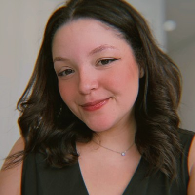

Portfólio profissional · 2026
JuliaAssunção
Estratégia, criatividade e comunicação para construir marcas e gerar resultados.
Sobre mim
Estratégia e criatividade em diferentes formas de comunicar.

Gosto de transformar ideias em projetos e acompanhar cada etapa, do planejamento à execução.
Sou formada em Publicidade e Propaganda e atuo na área de marketing, conectando estratégia, criatividade e comunicação.
Ao longo da minha trajetória, desenvolvi experiências em planejamento de campanhas, branding, marketing digital, conteúdo, redes sociais e projetos criativos.
Já trabalhei com diferentes segmentos e desafios, desde a comunicação institucional no mercado de saúde até o universo de beleza e cosméticos.
Minha atuação
Uma visão integrada de marketing.
Projetos
Do planejamento à execução.
Escolha um projeto para ver o desafio, a minha atuação e o direcionamento estratégico.
BMÉS · Performance digital
Estratégia acompanhada por indicadores.
O acompanhamento dos resultados permite observar a evolução dos canais, identificar oportunidades e entender o comportamento da audiência.
Visualizações em maio
Crescimento de 337% em relação a abril.
Visualizações em julho
Crescimento de 15% em relação a junho.
Alcance de novas pessoas
Das visualizações de maio vieram de pessoas que ainda não seguiam o perfil.
Base de seguidores
Barras na mesma escala, de 0 a 600 mil.
Contato
Obrigada por conhecer um pouco do meu trabalho.
Acredito em um marketing que une pensamento estratégico, criatividade e sensibilidade para entender marcas, pessoas e diferentes formas de comunicar. Cada projeto representa uma oportunidade de aprender, construir e encontrar novas maneiras de transformar ideias em experiências relevantes.